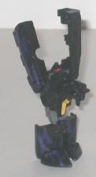

Size : Mini-Con
Difficulty of Transformation : Very Easy
Color Scheme : "Cheese" yellow, gray, and some black, silver, light red, and royal purple
Rating : 6.5
Allegiances
: Decepticon
Set Price
(in addition to membership):
$87 (U.S.)
(NOTE: Because this is set a repaint, this
is not a full-blown review. This mainly covers any changes made to the
set and the color scheme, and merely compares it to the previous iterations
of these molds. For a review on the Giant Minicon Team, the molds used
for Astro-Hook, Astro-Line, and Astro-Sinker, go
here
.
For a review on Armada Jetfire w/ Comettor, the mold used for Astrotrain
& Starcatcher, go
here
.)
 Astro-Hook
Astro-Hook
Size
: Mini-Con
Difficulty of Transformation
: Very
Easy
Color Scheme
: "Cheese" yellow, gray,
and some black, silver, light red, and royal purple
Rating
: 6.5
Named partially after
the first member of the Unicron minions "Hook, Line, and Sinker" from a
few issues of the original Marvel G1 comics, Astro-Hook has a more realistic
color scheme for a construction vehicle than the mold's previous paint
job did-- a orangish yellow color is certainly more appropriate than a
light green affair. The gray is also pretty realistic and goes well with
the gray. The purple is an interesting color to add to the mix, though
since it only shows up in robot mode it doesn't hurt the realistic colors
of the vehicle mode. The purple does provide an excellent contrast to the
orange-yellow, though, I'll give it that, and the black is another nice
dark color to add into the mix. The silver doesn't really go all that well
with the orange-yellow, but it doesn't outright clash and it's used sparingly,
so I don't mind it much. Still, overall the toy just doesn't catch the
eye as much as Longarm did, even if it has a more realistic color scheme.
No mold changes have
been made to Astro-Hook.
 Astro-Line
Astro-Line
Size
: Mini-Con
Difficulty of Transformation
: Easy
Color Scheme
: Royal purple, gray,
"cheese" yellow, and some black, white, and light red
Rating
: 7.5
Out of any of the members
of this set, Astro-Line looks the most similar to his mold's previous paint
job, though the two are still easily discernible from the other. Astro-Line's
main color is purple, while his predecessor Overcast's main color was a
dark blue, hence why they look a tad similar at first glance. Astro-Line's
colors really contrast extremely well, though, even a little better than
the already superb Overcast's. The "cheese yellow" on the front of the
lower legs and the wings and chest looks really nice against the purple,
and the gray helps to ground the color scheme in a more realistic sense
at least a little.; The white lines on the back of the wings also look
really great against the other colors, and although the black doesn't contrast
very much with the purple, using it for the head and feet helps to differentiate
those parts a bit more and make Astro-Line look more varied.
No mold changes have
been made to Astro-Line.
 Astro-Sinker
Astro-Sinker

Size
: Mini-Con
Difficulty of Transformation
: Very
Easy
Color Scheme
: Black, royal purple,
and some gray, "cheese" yellow, white, and light red
Rating
: 6.3
Astro-Sinker definitely
looks the most evil out of the Minicons in this set, with a primarily black-and-purple
color scheme that goes great with his light red optics. The "cheese" yellow
looks fairly good against the black, though it doesn't go quite as well
with the other colors here as it did on Astro-Line. The gray and white
also go well with the black. However, though the purple looks pretty good
under a strong light and helps Astro-Sinker fit in a bit easier with the
other members of this set, it's too dark in comparison to the black. Under
anything but a strong light, it's prettyhard to make out all those neat
purple markings on the sides of his submarine mode.
No mold changes have
been made to Astro-Sinker.
 Starcatcher
Starcatcher
Size
: Mini-Con
Difficulty of Transformation
: Easy
Color Scheme
: White, gray, and some
royal purple
Rating
: 6.0
Starcatcher has a pretty
good color scheme overall, with the white accenting the gray very well.
The purple wheels are a tad odd, but it's not like you're trying to blend
in when you're a moon buggy with a gun, so there you go. What really bugs
me about Starcatcher, though, is that he NO paint applications whatsoever,
not even one. It makes his main body look very dull, especially the gray,
and there's not enough color variation overall to make the toy look good
without any paint apps.
No mold changes have
been made to Starcatcher.
 Astrotrain
Astrotrain
Size
: Giga-Con (Armada size class)
Difficulty of Transformation
: Medium
Color Scheme
: Gray, royal purple,
and some "cheese" yellow, white, black, silver, light red, and transparent
orange
Rating
: 9.5
Based on a Toys "R" Us
Exclusive Jetfire repaint named "Spacewarp" that was never released, Astrotrain
certainly has a busy color scheme, but it's obviously meant to be that
way. I mean, this Decepticon's got paint detailing out the wazoo, and it
looks great. Astrotrain has the "classic G1" colors of the original
Astrotrain
--
namely, gray, black and purple. Both colors go great together, despite
all of them being dark colors, though there's also a few light colors to
help add to the contrast of the figure. The cheese yellow would look bad
in large amounts, but it's used just enough on this figure where it doesn't
make the toy overly loud-- the stripes used throughout the figure look
really cool. The white also makes a great contrasting color against the
other colors, especially as neat zig-zag stripes all over the wings. The
transparent orange goes well with the other colors, though to be honest
it's a tad disappointing they kept the those pieces the same color as the
previous time this mold was used, as
Powerlinx
Jetfire
. The only paint application I really don't like on Astrotrain
is the freaking HUGE Decepticon symbol on the back of his shuttle mode--
I've never been a big fan of big faction symbols. However, Fun Publications
asked its club members in a poll whether they wanted to keep the huge faction
symbol that was on the Spacewarp toy prototype, and a clear majority said
yes, so I can't fault the Collectors' Club for doing what the majority
of its members wanted. Astrotrain keeps the electronic sounds that Powerlinx
Jetfire had, which is a nice surprise considering that most limited-run
exclusives like this forego the electronics.
Astrotrain does have
one mold change-- namely, the head has been remolded to be pretty much
an exact duplicate of G1 Astrotrain's head. It's a rather poor head sculpt,
however-- the "helmet" around the head looks fine, but the face is definitely
odd. It looks too wide, or the nose is too big, or something but it definitely
is "off" in a way I can't quite explain.
Astrotrain and his Minicons
make up a great set-- it's nice to have five seperate toys in one set that
isn't a Botcon exclusive, and all of them have great colors, especially
Astrotrain. Starcatcher is the only real disappointment of the set, given
his utter lack of paint apps. Highly recommended, if you collect high-end
stuff like this-- $87 is really a fairly good deal for an exclusive with
this limited of a run, I would have expected the price to be a little over
$100 given the pricing of most other exclusives.
Review by Beastbot